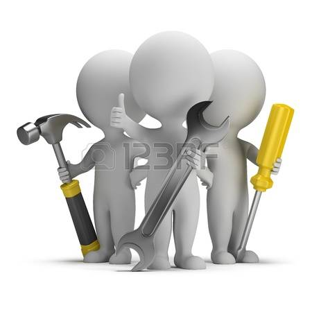
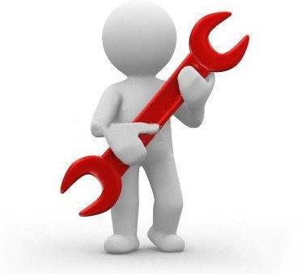
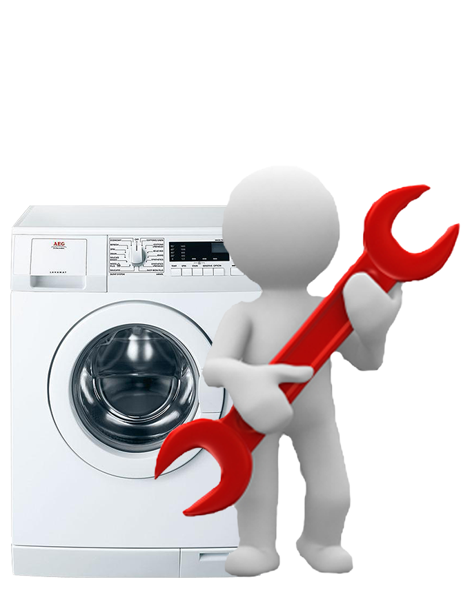

Мой мастер
Наша сервисная служба производит качественный, недорогой и быстрый ремонт стиральных машин всех известных марок и моделей. Ремонтные работы осуществляются с выездом мастера на дом по Киеву и ближайшему пригороду. На выполненные работы предоставляется гарантия от 6 месяцев.
Стоимость вызова мастера и диагностики неисправности - 150 грн. При согласии на дальнейшее проведение ремонтных работ вызов мастера - бесплатный, в этом случае Вы оплачиваете только стоимость работ и замененных комплектующих. Мастер всегда учитывает интересы заказчика и приезжает в удобное для вас время.
Учитывая наш многолетний опыт в сфере обслуживания бытовой техники мы проводим оперативную диагностику неисправности, а также замену деталей и комплектующих (включая замену подшипников) для всех марок стиральных машин как отечественных, так и импортных производителей непосредственно на дому, без необходимости транспортировки в мастерскую.

График работы:
Мы работаем без выходных
с 8:00 до 20:00
